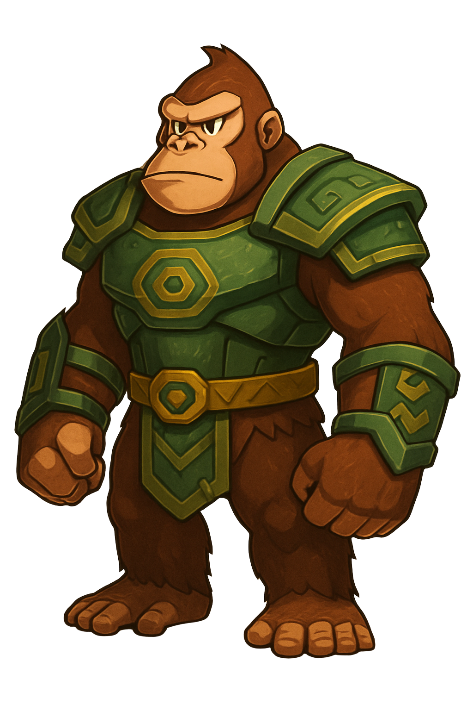

Kongo – O Protetor da Floresta
Espécie: Gorila robusto;
Personalidade: Líder nato, destemido,
calmo sob pressão;
Habilidades: Força bruta, pode quebrar
obstáculos e levantar objetos pesados;
Estilo de jogo: Tanque/lutador.
Lupy – A Veloz do Subterrâneo
Espécie: Raposa ágil;
Personalidade: Curiosa, sarcástica, rebelde;
Habilidades: Dashes rápidos,
escorregões em túneis, pulos duplos;
Estilo de jogo: Velocista/exploradora.
Zaru – O Vidente Alado
Espécie: Arara xamânica;
Personalidade: Misterioso, sábio, fala por enigmas;
Habilidades: Voo limitado, visão de pontos
ocultos, feitiços leves;
Estilo de jogo: Suporte/explorador mágico.
Grakk – O Traidor Redimido
Espécie: Crocodilo com armadura de madeira;
Personalidade: Arrependido, forte, silencioso;
Habilidades: Escudo natural, ataques
giratórios, defesa pesada;
Estilo de jogo: Defesa/pesado.
Nyra – A Guardiã do Crepúsculo
Espécie: Coruja mística;
Personalidade: Silenciosa, sábia, protetora dos
segredos antigos; Habilidades: Visão noturna,
Planar silenciosamente, Eco do Tempo
Estilo de jogo: Suporte furtivo/controle de ambiente.
Thokk – O Furioso da Floresta
Espécie: Javaporco blindado;
Personalidade: Temperamental, impulsivo, mas leal;
Habilidades: Investida destruidora, Rugido
de fúria, Resistência Feral;
Estilo de jogo: Tanque ofensivo/quebra-caminhos.